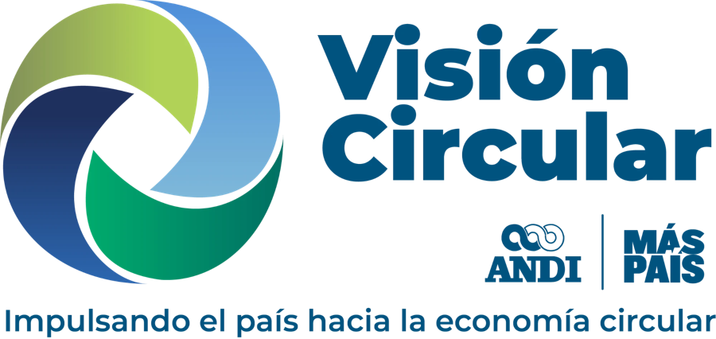

1
Datos de la idea
Para que el equipo sepa de quién es y de qué trata.

Una ficha por idea. Escribe lo que ya sabes; lo demás lo trabajamos juntos. No necesitas cuenta ni registro.
Para que el equipo sepa de quién es y de qué trata.
Qué situación quieres atender y por qué importa.
Los pequeños comercios del municipio generan empaques que hoy se mezclan con otros residuos. Quien los recoge no sabe cuáles se aprovechan, y los comerciantes no ven qué ganan al separarlos.
El cambio de fondo al que tu idea aporta.
Aumentar el aprovechamiento verificable de los materiales posconsumo en el país.
Lo que este proyecto se propone lograr.
Diseñar y validar un esquema de separación de empaques con pequeños comercios de un municipio, que pueda replicarse en otros.
Mínimo tres objetivos, hasta seis. Cada uno con las actividades que necesite, de una a seis.
Objetivo: Validar la ruta de recolección con los comercios.
Actividades: mapear los comercios participantes; acordar días y puntos de entrega; ejecutar la prueba durante un mes.
Opcional, pero ayuda a evitar trabajo repetido.
Gracias por sumar tu idea. Si quieres una copia para ti, puedes descargarla.